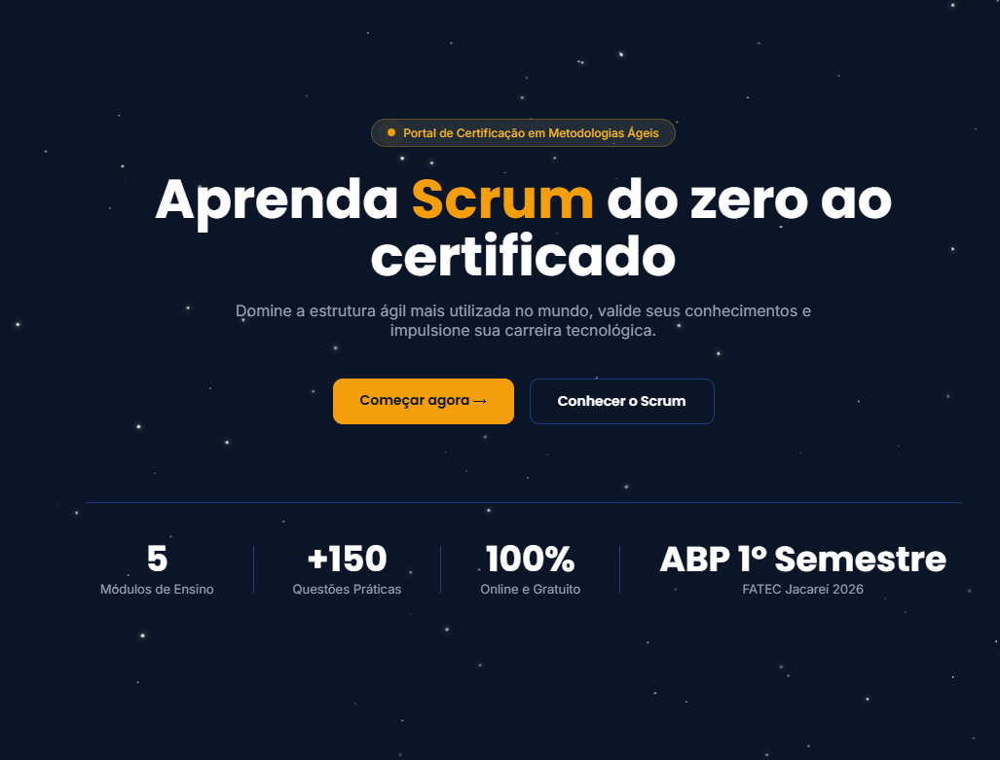

Front-end
Desenvolvimento de interfaces e aplicações para web.
HTML
CSS
JavaScript
React
Estudante de Desenvolvimento de Software Multiplataforma, construindo minha trajetória no desenvolvimento web e transformando conhecimento em projetos reais.
Sou formado em História e direciono minha trajetória profissional para a tecnologia por meio do curso de Desenvolvimento de Software Multiplataforma na FATEC Jacareí.
Minha formação em História desenvolveu habilidades como análise, pesquisa, interpretação de informações e pensamento crítico. Na formação em DSM, aplico essas habilidades ao desenvolvimento de software e construo conhecimentos em desenvolvimento web, programação, bancos de dados, backend e ferramentas utilizadas no desenvolvimento de sistemas.
Projetos práticos permitem transformar o aprendizado em experiência, explorar novas tecnologias e evoluir continuamente como desenvolvedor.
Meu objetivo é consolidar minha atuação em tecnologia, ampliar minha experiência prática e contribuir para o desenvolvimento de soluções de software.
Tecnologias e ferramentas que fazem parte da minha formação e dos projetos que venho desenvolvendo.
Desenvolvimento de interfaces e aplicações para web.
Desenvolvimento de aplicações, APIs e integração entre diferentes camadas do sistema.
Modelagem, consultas, manipulação e integração de dados em aplicações.
Ferramentas utilizadas no desenvolvimento, versionamento e execução de projetos.
Dois projetos integradores desenvolvidos ao longo da minha formação em DSM, com contribuições documentadas em vídeo.


Portal web de certificação interna em metodologias ágeis, desenvolvido em equipe como Projeto Integrador. A aplicação permite avaliações progressivas, acompanhamento de desempenho e certificação após a conclusão dos módulos.
Modelagem, tabelas, relacionamentos e chaves.
Desenvolvimento dos diagramas de Casos de Uso e Sequência.
Cadastro, login e proteção de rotas com JWT e bcrypt.
Desenvolvimento de rotas para recuperação dinâmica das questões.
Refatoração do front-end com HTML, CSS e JavaScript.
Implementação de funcionalidades administrativas e reset de senha.
Middleware para controle de acesso às áreas protegidas.
Implementação de recursos como notas por módulo e melhorias no sistema.


Plataforma web para monitorar consumo energético e emissões de CO₂e em serviços digitais. Desenvolvida pela Let:zApplin com a Unilaunch, estima energia e emissões regionais a partir de métricas de CPU, memória, disco e rede. Inclui descoberta automática, análises históricas, workspace personalizável, projeções de redistribuição e o assistente Karma com suporte opcional ao Ollama.
Participação na modelagem inicial do banco relacional (serviços, coletas, métricas, usuários e intensidade de carbono).
Desenvolvimento de diagramas técnicos e apoio à prototipação das telas.
Integração com a Metrics Aggregator (descoberta e coleta de serviços) e com a Carbon Intensity API (fatores regionais de CO₂e).
Desenvolvimento de endpoints para coleta, histórico, indicadores consolidados e dashboard.
Implementação de autenticação JWT e autorização administrativa para coleta manual.
Desenvolvimento de telas e componentes em React 19 + TypeScript (Home, Monitoramento, Análises, Workspace).
Blocos arrastáveis, redimensionáveis e minimizáveis, com criação/renomeação/exclusão de páginas e persistência via localStorage.
Participação na suíte de testes (300 testes backend, 101 frontend e 7 de integração PostgreSQL aprovados), typecheck e build do projeto.
Graduação tecnológica com formação em desenvolvimento de software, desenvolvimento web, programação, bancos de dados e tecnologias multiplataforma.
Graduação tecnológicaFormação acadêmica voltada à pesquisa, análise, interpretação histórica e desenvolvimento do pensamento crítico.
ConcluídoVenturus
Cisco
Cursa
Cursando · Nível intermediário
Estou aberto a oportunidades de estágio, projetos e conexões profissionais.
Se quiser conhecer meu trabalho, trocar uma ideia sobre tecnologia ou conversar sobre oportunidades, você pode me encontrar pelos canais abaixo.
Estou construindo minha experiência profissional através de projetos acadêmicos e pessoais, buscando minha primeira oportunidade na área de desenvolvimento de software.